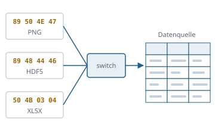

Jede Datei lesen, keine verändern
Funktionsübersicht für die Präsentation des envisionz-Frameworks, Stand 28.09.2026. Eigene Leser in reinem Java für Datenbanken und Tabellen, Messdaten, wissenschaftliche Behälter, Netze und CFD-Ergebnisse, Bilder, Office-Dateien und Triebwerkskennfelder, dazu SQL über jeder Quelle und eine Strukturerkennung für unbekannte Textformate. Je Verfahren: Zweck, Methoden, Einsatz im Framework, Anwendungen, Beispiele. Die Beispiele sind gekürzt.

Grundsätze des Moduls
READ bzw. READ_ONLY, ohne Journal-, Sperr- oder Temporärdateien. Nurlesenprobe durchsucht den ganzen Quellbaum nach 24 Mustern schreibender Aufrufe.Wert trägt die Bytes, aus denen er gedeutet wurde. Ein Datum 00000000 wird nicht zu Jahr 2.befunde(); nichts wird erfunden oder still übergangen.Eine Sicht für alle tabellarischen Formate envisionz.fileformats
Datenquellen, Datenquelle, Satzkursor, Wert, Knoten
Eine Fabrik öffnet eine Datei nach ihrem Inhalt und liefert eine Datenquelle: Format, Metadatenbaum, Tabellen und Befunde. Die Fabrik ist ein switch, den der Übersetzer auf Vollständigkeit prüft, bewusst kein ServiceLoader. Hierarchische Formate (HDF5, netCDF, CGNS, Exodus, VTK, Gmsh, HDF4) erscheinen zusätzlich in der Langform: eine Tabelle je Achsenkombination. Hintergrund, Formeln und Pseudocode →
Methoden
Datenquellen.oeffne(pfad),oeffne(pfad, Format.PLOT3D),oeffneVerbund(leitdatei)(Ensight)format(),wurzel(),tabellen(),kursor(tabelle[, vorauswahl]),befunde()Satzkursor:felder(),weiter(),wert(i|name),satznummer()Wert:typ(),istLeer(),alsText(),alsZahl(),roh()Knoten:kinder(),eigenschaften(),finde(name),baum()
Eingesetzt in
Wofür
Einen Import für viele Formate schreiben; alte und fremde Datenbestände sichten, ohne sie anzufassen.
Beispiel – jede Tabelle einer Datei durchlaufen
try (Datenquelle q = Datenquellen.oeffne(Path.of("messung.parquet"))) {
for (String t : q.tabellen()) {
try (Satzkursor k = q.kursor(t)) {
while (k.weiter()) { Double p = k.wert("druck").alsZahl(); /* … */ }
}
}
q.befunde().forEach(System.out::println);
}Formaterkennung und Dateikunde – was ist das für eine Datei?
Eine Signaturtabelle für 55 Formate, darunter auch solche ohne Leser (PDF, PostScript, Tecplot binär, Java-Klassendatei, zstd, LZ4). Die Dateikunde ergänzt Größe, Anteil druckbarer Zeichen, Nullbytes, UTF-8-Tauglichkeit, BOM, Zeilenenden, Fortran-Satzmarken und die Werkzeuge des Hex-Betrachters.
Methoden
Formaterkennung.erkenne(pfad|kopf),spielart(kopf, f),lesbar(pfad)Dateikunde.untersuche(pfad)→Befund(kurz(),erkannt())lese(pfad, ab, hoechstens),suche(pfad, muster, ab),satzraster,fortranSatzmarke,textaufbau
Eingesetzt in
Wofür
Unbekannte Dateien einordnen, falsch benannte Dateien finden, Datenlieferungen prüfen.
Beispiel – Format und Spielart
Format f = Formaterkennung.erkenne(Path.of("daten.bin")); // z. B. MDF4, auch mit falscher Endung
System.out.println(Dateikunde.untersuche(Path.of("daten.bin")).kurz());SQL über jeder Datenquelle envisionz.fileformats.sql
Sql – SELECT ohne Datenbankmaschine
Ein eigener Auswerter für eine SELECT-Teilmenge, nicht nur über SQLite, sondern über jede Datenquelle: dBASE, Parquet, XLSX, TDMS, HDF5 in Langform … Dreiwertige Logik wie im Standard (NULL = NULL ist unbekannt). Ohne ORDER BY, GROUP BY und DISTINCT läuft die Abfrage streamend und bricht bei LIMIT ab.
Umfang
SELECT [DISTINCT] … FROM … WHERE … GROUP BY … HAVING … ORDER BY … LIMIT … OFFSETAND/OR/NOT,LIKE,IN,BETWEEN,IS NULL, Rechnen und VerkettenUPPER LOWER TRIM LENGTH ABS ROUND COALESCE IFNULL SUBSTR;COUNT SUM AVG MIN MAX- Benannt abgelehnt: Joins, Unterabfragen, UNION, Fensterfunktionen, alles Schreibende
Sql.frage(quelle, sql)→Ergebnis(spalten, zeilen)
Eingesetzt in
Wofür
Eine dBASE-Datei von 1990 abfragen wie eine Tabelle; Messkanäle filtern, ohne sie zu konvertieren.
Beispiel – Prüfstandsdaten filtern
try (Datenquelle q = Datenquellen.oeffne(Path.of("pruefstand.tdms"))) {
Ergebnis e = Sql.frage(q, "SELECT zeit, druck FROM Messung WHERE druck > 2e5 ORDER BY zeit LIMIT 100");
}Datenbanken und Tabellen dbase · sqlite · lmdb · parquet · arrow · avro · xlsx · shape
Acht tabellarische Formate
Jeder Leser kennt die Stellen, an denen ein Leser still falsch wird, und hat dafür eine Gegenprobe. Beispiele: der rechteste Teilbaum einer .ndx-Seite, die gepackten Blätter einer .cdx, Thrift-Feldnummern als Abstände in Parquet, Spaltenbuchstaben ohne Null und der Schaltjahrfehler von 1900 in XLSX.
Abgleich gegen Spezifikation und Vergleichsprodukt: dBASE · SQLite · LMDB · Parquet · Arrow IPC · Avro · XLSX · Shapefile
| Format | Leser | Besonderheit |
|---|---|---|
| dBASE, FoxPro | DbaseQuelle, Memodatei, Indexdatei (.ndx/.mdx/.cdx/.idx) | Memos, Indexbäume als Einträge in Indexreihenfolge |
| SQLite | SqliteQuelle | liest die Seiten selbst, ohne C und ohne Wasm; meldet ein unaufgeräumtes Journal |
| LMDB | LmdbQuelle | einziger bekannter Java-Leser des Dateiformats |
| Parquet | ParquetQuelle | Snappy, gzip; fehlende Werte belegen keinen Platz; Hadoop nicht nötig |
| Arrow IPC, Avro | ArrowQuelle, AvroQuelle | Avro mit Schema-Auflösung |
| XLSX | XlsxQuelle | Stromweg statt DOM; Datum allein am Zellformat; Schaltjahrfehler 1900 wird nicht gedeutet |
| Shapefile | ShapeQuelle | Geometrie und dBASE-Attribute, Bezugssystem aus der .prj |
Eingesetzt in
Wofür
Altbestände (dBASE, Excel) übernehmen, Datenbankdateien forensisch sichten, Big-Data-Exporte (Parquet, Arrow) ohne Hadoop lesen.
Messdaten und Zahlenfelder tdms · mdf · uff · matlab · npy · fits
Prüfstand, Fahrzeug, Schwingung, Labor
Formate, in denen Versuchsergebnisse ankommen. Rohwert und umgerechneter Messwert werden getrennt geführt; was nicht gelesen wird, ist benannt.
Abgleich gegen Spezifikation und Vergleichsprodukt: TDMS · MDF 3 · MDF 4 · UFF · MATLAB · NPY/NPZ · FITS
| Format | Herkunft | Besonderheit |
|---|---|---|
| TDMS | National Instruments (LabVIEW) | Segmente, die aufeinander aufbauen; verschränkte Werte |
| ASAM MDF 3 und 4 | Fahrzeug- und Motorprüfstände (CAN) | Umrechnungsregeln, gepackte Datenblöcke, Rohwert neben Messwert |
| UFF/UNV | Schwingungsmesstechnik (Datensatz 58 u. a.) | Punktaufbau aus zwei Feldern in Satz 7; gleichmäßige Abszisse steht nicht in der Datei |
| MATLAB Stufe 5 | .mat | kurze und lange Marken, spaltenweise Ablage, gepackte Variablen ab Fassung 7 |
| NumPy | .npy, .npz | Kopf als Python-Literal, das nicht ausgeführt wird; Fortran- und C-Ordnung |
| FITS | Astronomie | Bilder, ASCII- und Binärtabellen, Rice-Kompression, WCS |
Beispiel – Kanäle einer MDF-4-Datei mit SQL
try (Datenquelle q = Datenquellen.oeffne(Path.of("fahrt.mf4"))) {
System.out.println(q.tabellen()); // eine Tabelle je Kanalgruppe
Ergebnis e = Sql.frage(q, "SELECT MAX(Drehzahl) FROM " + q.tabellen().get(0));
}Wissenschaftliche Behälter envisionz.fileformats.hdf5 · .netcdf · .hdf4 · container · langform
Hdf5File, NetcdfFile, HDF4 – das reichere Modell
HDF5 mit allen Superblock-Fassungen, B-Bäumen, Fraktal-Heap, Chunks, virtuellen Datensätzen, Referenzen und den Filtern Deflate, LZ4, LZF, N-Bit, Scale-Offset, Szip und Prüfsummen. netCDF-3 und netCDF-4 (über HDF5), HDF4. Gegen h5py 24 von 24 Zahlenfeldern wertgleich; Referenzdateien der HDF Group im Prüfstand.
Abgleich gegen Spezifikation und Vergleichsprodukt: HDF5 · netCDF · HDF4
Methoden
Hdf5File.open(pfad),root(),node(pfad),dataset(pfad),datasetPaths(),verifyChecksums(true)Hdf5Dataset:shape(),type(),filterChain(),chunks(),readDouble([von, anzahl]),readString()NetcdfFile.open(pfad),variables(),dimensions(),globalAttributes()
Eingesetzt in
Wofür
Simulations- und Messergebnisse, Klimadaten (netCDF), Satellitendaten (HDF4), Gewichte von neuronalen Netzen.
Beispiel – einen Ausschnitt lesen, Prüfsummen an
Hdf5File f = Hdf5File.open(Path.of("ergebnis.h5"));
f.verifyChecksums(true);
double[] p = f.dataset("/stroemung/druck").readDouble(0, 10_000);Datencontainer, Datenkatalog, Langform
Der Containerleser deutet eine Hausstruktur über HDF5: /MASTER mit Kopfattributen, /MISCDATA mit eingebetteten Modelltexten, eine Spalte je Messgröße; der Katalog führt Bestände, Projekte, Versuche. Die Langform macht aus mehrdimensionalen Feldern Tabellen mit den Achsen als Spalten, damit auch HDF5, netCDF und CGNS über SQL abfragbar sind (C- gegen Fortran-Ordnung beachtet).
Methoden
Datencontainer.lies(pfad),kopf(),abschnitte(),spalten(),spalte(name)Datenkatalog.bestaende(katalog),projekte,versuche,dateienLangform.oeffne(pfad),ueberHdf5,ueberNetcdf,ueberCgns,ueberExodus,ueberVtk,ueberGmsh,ueberHdf4
Eingesetzt in
Wofür
Versuchsdatenbestände durchsuchen, Messgrößen über viele Versuche vergleichen.
Netze und CFD-Ergebnisse cgns · exodus · ensight · vtk · plot3d · gmsh · stl · step · iges
Neun Formate aus Strömungs- und Strukturrechnung
Für CGNS, Ensight Gold, Exodus II, PLOT3D und VTK Legacy gibt es in Java sonst nur Mäntel um C- oder C++-Bibliotheken, für Gmsh gar nichts. STEP und IGES werden in ihrer Struktur gelesen (Kopf, Instanzen, Typen), ohne Geometriekern.
Abgleich gegen Spezifikation und Vergleichsprodukt: CGNS · Exodus II · EnSight Gold · VTK · PLOT3D · Gmsh · STL
| Format | Inhalt | Besonderheit |
|---|---|---|
| CGNS | CFD-Standard (SIDS über HDF5) | Zonen, Gitter, Lösungen, Randbedingungen |
| Exodus II | FEM (über netCDF) | Blöcke, Knotenmengen, Zeitschritte |
| Ensight Gold | CFD-Nachlauf | Leitdatei mit Nachbardateien: oeffneVerbund |
| VTK Legacy | ParaView, VTK | auch die Zellform der Fassung 5.1 |
| PLOT3D | NASA-Gitter und Lösungen | ohne Kennung: Bauart wird ausgerechnet oder vorgegeben |
| Gmsh | .msh 2.2 und 4.1, Text und binär | vier Formate unter einer Endung |
| STL | Dreiecksnetze | binär/Text an der Dateigröße erkannt, nicht am Wort solid |
| STEP, IGES | CAD-Austausch | nur die Struktur, Eignerentscheidung |
Eingesetzt in
Wofür
Ergebnisse fremder CFD-Löser mit machieve vergleichen, Gitter übernehmen, Nachlaufdaten auswerten.
Beispiel – PLOT3D ohne Kennung ausdrücklich öffnen
Datenquelle q = Datenquellen.oeffne(Path.of("gitter.xyz"), Format.PLOT3D);Bilder png · jpeg · gif · bmp · tiff · webp · bild
Bilder – sechs Bildformate ohne javax.imageio
Eigene Dekoder mit eigenem LZW, Huffman und Deflate (aus framework-compress). JPEG mit Arithmetikkodierung, hierarchisch, Neustartmarken und EXIF; PNG mit 16 Bit und allen Durchsichtigkeitswegen; TIFF mit LZW, PackBits, CCITT und Prädiktor; WebP verlustfrei und verlustbehaftet mit Farbprofil. Gegen Pillow und ImageIO gemessen, Befunde an beiden dokumentiert. Hintergrund, Formeln und Pseudocode →
Abgleich gegen Spezifikation und Vergleichsprodukt: PNG · JPEG · GIF · BMP · TIFF · WebP
Methoden
Bilder.oeffne(pfad),ausBytes(roh, name),lesbar(format)Bildbefund:breite(),hoehe(),punkte()(ARGB),teilbilder(),kopf(),befunde()- einzeln:
PngDatei.lies,JpegDatei.lies,GifDatei.lies,TiffDatei,WebpDatei,BmpDatei
Eingesetzt in
Wofür
Bilder in native-image-Anwendungen ohne AWT-Bildleser, forensische Prüfung von Bilddateien, Digitalisieren von Diagrammen.
Beispiel – Bild lesen und Befunde zeigen
Bildbefund b = Bilder.oeffne(Path.of("kennfeld.webp"));
int argb = b.punkte()[y * b.breite() + x];
b.befunde().forEach(System.out::println);Office-Dateien und Behälter pptx · cfb · zip
PptxQuelle, Folienplan, CfbQuelle, ZipQuelle
PowerPoint: Text, Tabellen und die Lage jeder Form (Position, Größe, Drehung, Füllung, Linie, Thema), so dass eine Folie nachgezeichnet werden kann. Die alten Binärformate PPT, DOC und XLS als Compound-File-Behälter mit Verzeichnis. ZIP als Behälter mit Inhaltsverzeichnis als Tabelle. Hintergrund, Formeln und Pseudocode →
Abgleich gegen Spezifikation und Vergleichsprodukt: PPTX · Compound File
Methoden
Datenquellen.oeffne(Path.of("vortrag.pptx"))– Text und Tabellen je FolieFolienplan:art(),x(),y(),breite(),hoehe(),drehung(),text(),bild(),tabelle();Gestalt,ThemaCfbQuelle(PPT, DOC, XLS, OLE2),ZipQuelle
Eingesetzt in
Wofür
Inhalte aus Präsentationen und alten Office-Dateien übernehmen, Folien als Vorschau zeichnen.
Kennfelder, NPSS-Ausgaben envisionz.fileformats.gasturb · .npss
GasTurbLeser, NpssLeser, NpssSchreiber, GasTurbSchreiber – Verdichter- und Turbinenkennfelder
GasTurb-.MAP und NPSS-Kennfeldtabellen in ein gemeinsames Kennfeld (Massenstrom, Wirkungsgrad, Druckverhältnis, Pumpgrenze, Reynolds-Punkte). Die Schreiber bauen den Text in beide Richtungen und sind über Rundlauf-Proben gegen die Leser abgesichert. Die Datei schreibt der Aufrufer, nicht dieses Modul.
Methoden
GasTurbLeser.lies(pfad|text),NpssLeser.lies(pfad[, feldbreite, vorspann])Kennfeld:tabelle(Kennfeldart.WIRKUNGSGRAD),pumpgrenzeMassenstrom(),pumpgrenzeDruckverhaeltnis(),reynolds()new NpssSchreiber("\n").baue(kf),new GasTurbSchreiber('\t', "\n").baue(kf)
Eingesetzt in
Wofür
Kennfelder zwischen GasTurb, NPSS und ACM austauschen, Kennfelder prüfen und darstellen.
Beispiel – GasTurb-Kennfeld nach NPSS
Kennfeld kf = GasTurbLeser.lies(Path.of("hpc.MAP"));
Files.writeString(Path.of("hpc.map"), new NpssSchreiber("\n").baue(kf));NpssView, NpssAusgabe, Fallleser – NPSS-Ausgaben nach ihrem Seitenlayout
Zerlegt die .view-Beschreibung des NPSS-DataViewers und liest die PageViewer-Ausgabe danach: Anker, Blöcke, Felder an den Formatstellen. Nichts wird geraten; Überlauf, Text im Zahlenfeld und jedes unzugeordnete Zeichen werden gemeldet.
Methoden
NpssView.lies(pfad),seiten(),fallsichten(),seite(name)NpssAusgabe.lies(pfad, seite),spalten(),zeilen(),wert(fall, spalte),befunde()
Eingesetzt in
Wofür
NPSS-Ergebnisse maschinell auswerten und mit anderen Rechnungen vergleichen (etwa der NPSS-Übersetzung im eqnparser).
Unbekannte Textformate verstehen envisionz.fileformats.text
Eine ASCII-Datendatei ist die Spur eines kleinen Programms, etwa einer Fortran-FORMAT-Anweisung. Aus der langen Spur wird die kurze Grammatik erschlossen. Am Ende steht ein eigenständiger Java-Leser.
Struktur → Beschreibung → Abgleich → Java-Gerüst
Schicht 0 prüft Zeichensatz, BOM und Zeilenenden (je Zeile, mit Rundlauf). Schicht 1 macht aus jeder Zeile eine Form wie E R W. Schicht 2 erkennt Zählfelder, umgebrochene Sätze und Blöcke. Ein Regelbaum kachelt die Datei lückenlos; eine .fmt-Beschreibung erzeugt die Datei vorwärts und liest sie rückwärts. Die Abgleichschleife ortet Abweichungen byte-genau und repariert. Das Gerüst ist ein Java-Leser, der nur das JDK braucht.
Methoden
Textdatei.lies(pfad),Zeilenzerleger,Strukturleser.lies(pfad, zerleger)→StrukturbefundRegelbaum,Regel,Regelart,SicherheitBeschreibungsleser.lies(fmt),Vorwaerts.schreibe(b, raum),Rueckwaerts.lies(b, roh)Abgleich,Guete;Geruest.schreibe(b, paket, klasse)Analysekette(Schritte, Parameter, Lauf),Anonymisierer.ersetze(text, einstellung)
Eingesetzt in
Wofür
Alte Fortran-Ausgaben und undokumentierte Austauschformate lesbar machen, Daten vor der Weitergabe anonymisieren.
Beispiel – vom unbekannten Format zum Java-Leser
Textstruktur -datei:gitter.xyz -entwurf -abgleich
Textstruktur -datei:gitter.xyz -fmt:plot3d.fmt -abgleich -vergleich:zweites.xyz
Textstruktur -datei:gitter.xyz -fmt:plot3d.fmt -geruest:meine.pakete > Leser.javaKommandozeile cmd.fileformats
Datei, Dateikunde, Textstruktur, Katalogpruefer
Werkzeuge im Hausformat -name:wert, mit Rückgabewerten für Skripte: 0 gelesen, 10 etwas nicht zuzuordnen, 1 Fehler, 2 Aufruf unvollständig.
Beispiele
Datei -datei:messung.parquet -zeilen:20
Datei -datei:alt.dbf -sql:"SELECT name, wert FROM alt WHERE wert > 10"
Datei -ordner:./daten -endung:dbf
Dateikunde -ordner:./dtfs -endung:pref
Katalogpruefer -katalog:katalog.dbs -bestand:Name -tiefAbgleich gegen Spezifikation und Vergleichsprodukt
Jedes Format ist Merkmal für Merkmal gegen seine Spezifikation und gegen eine verbreitete, unabhängige Umsetzung geprüft – mit Fundstelle, Ampel für beide Seiten und einer Begründung zu jeder Abweichung. Wo das Vergleichsprodukt irrt, steht dabei, wie man es nachstellt. Alle Formate mit ihrer Deckung →
Einsatzmatrix im Framework
Welche Module welche Teile heute nutzen, im Quelltext gezählt (ohne Proben).
| Modul | Datenquelle | Erkennung | SQL | HDF5 / Container | Bilder / PPTX | Textstruktur | Kennfelder / NPSS | VTK | Wofür |
|---|---|---|---|---|---|---|---|---|---|
| app-fileanalysis | ● | ● | ● | ● | Dateianalyse: Hex, Struktur, Daten, Bilder, Folien, Anonymisieren | ||||
| app-hdf5reader | ● | HDF5-Baum, Datensätze, Kataloge | |||||||
| app-maps | ● | Kennfeldumwandlung GasTurb ↔ NPSS, NPSS-Ausgaben | |||||||
| app-machieve | ● | strukturierte VTK-Gitter, Validierung | |||||||
| framework-data | ● | HDF5 als LoadedTable | |||||||
| framework-reporttable | ● | HDF5 als Berichtsquelle |
Datenquelle-Sicht und SQL werden heute vor allem über app-fileanalysis und die Kommandozeile genutzt. Naheliegend als Nächstes: Messdaten (TDMS, MDF) direkt in app-charts und app-stats, Bilder in app-digitizer.